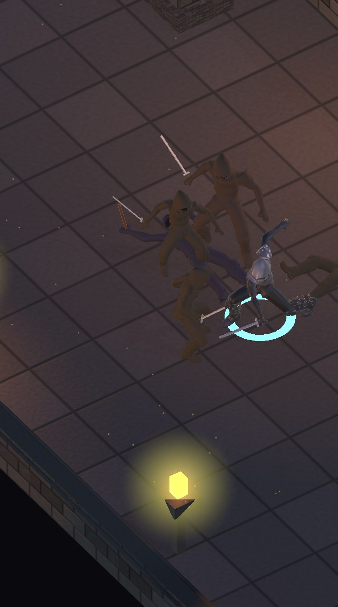
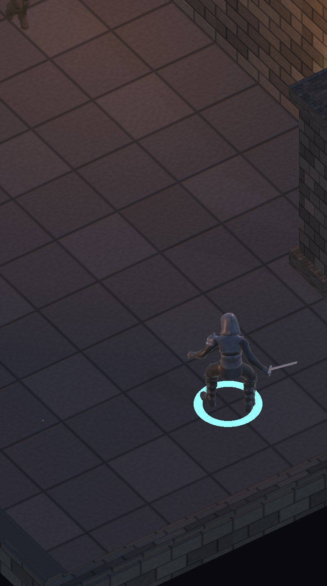
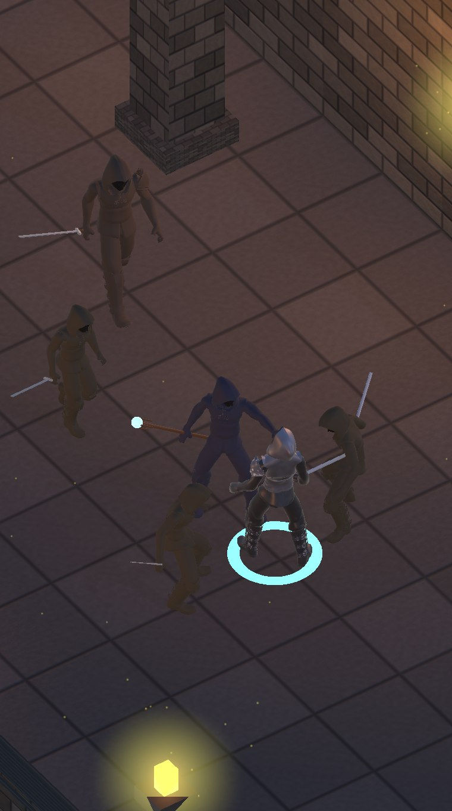
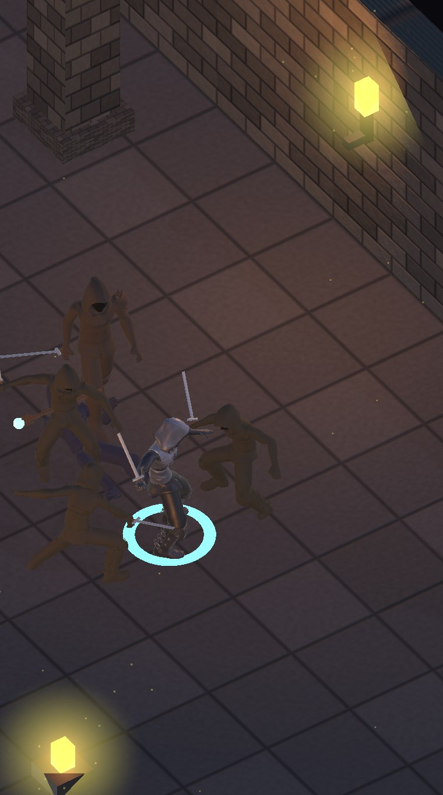
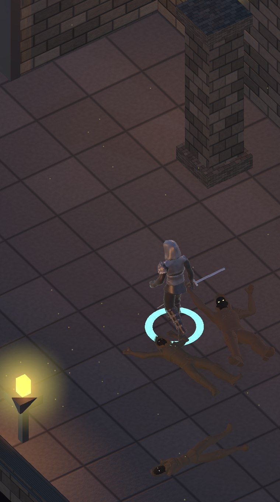
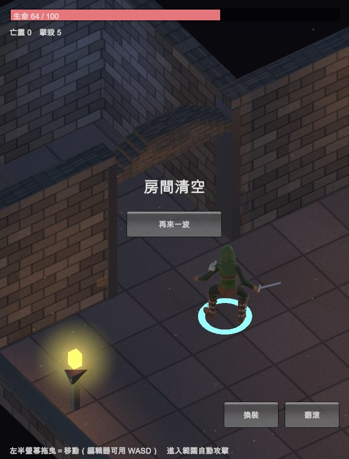

地城迴響 · Demo + 地城美術
石磚牆與石板地都帶法線貼圖，火把與火盆有柔光、餘燼與晃動， 空氣裡有浮塵。全部執行期算出來，零美術素材，$0。
這是「看得出雛形」的切片，不是可玩的遊戲。沒有技能樹、裝備掉落、 詞綴、存檔、程序生成的樓層、音效與配樂。






重點是法線貼圖。只有顏色貼圖的話，石牆仍然是一片平的色塊—— 磚縫、坑洞都要靠光影才看得出來，那是法線的工作。所以牆與地板都從 同一張高度場同時產出顏色與法線，兩者天生對齊。
RecalculateTangents()——法線貼圖沒有切線等於白做柔光團的形狀我改了三次才對：立方體（六個 1.5 公尺的發光方塊漂在半空）→ 球體（邊緣銳利的圓盤，因為球的 UV 是經緯展開不是徑向）→ 面向鏡頭的四邊形 + 徑向衰減貼圖。前兩次都在調整幾何，方向從一開始就錯了。
相機在西南方俯視，南牆與西牆正好夾在鏡頭與玩家之間，玩家有一半被牆吃掉。 這不是美觀問題，是看不看得到自己角色的問題。解法是等距遊戲的通用做法： 近端的南牆與西牆改成 0.55m 矮牆、西側柱子拿掉，遠端的北牆與東牆維持全高當背景。
原本用「高頻 Perlin 的等值線」當裂縫。那行不通——等值線是封閉的圈， 畫出來滿地都是像等高線一樣的蠕蟲。調門檻只會讓蠕蟲變細，不會變成裂縫。整層拿掉。
每一輪美術改動之後都重跑同一套玩法驗證，確認沒有把邏輯弄壞：
| 項目 | 結果 |
|---|---|
| 擊殺數 | 5（自動攻擊有觸發，傷害有落地） |
| 玩家生命 | 100 → 64（敵人打得到人，不是站樁） |
| 邊界 | 玩家 Z = 6.47 < 走廊上限 11.60，沒有穿牆 |
unavailable。
Xcode 專案 batchmode 14 秒就產得出來，接上手機就能跑。